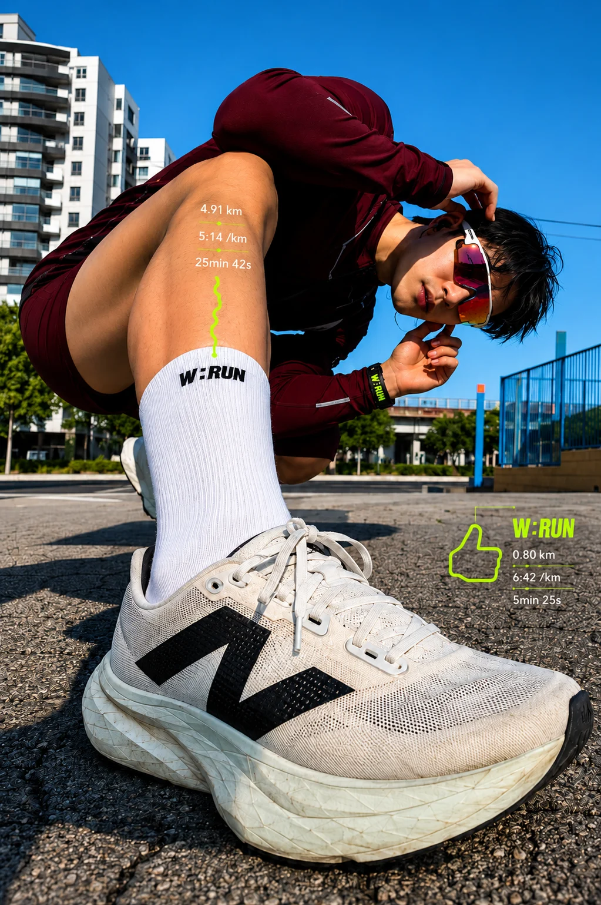
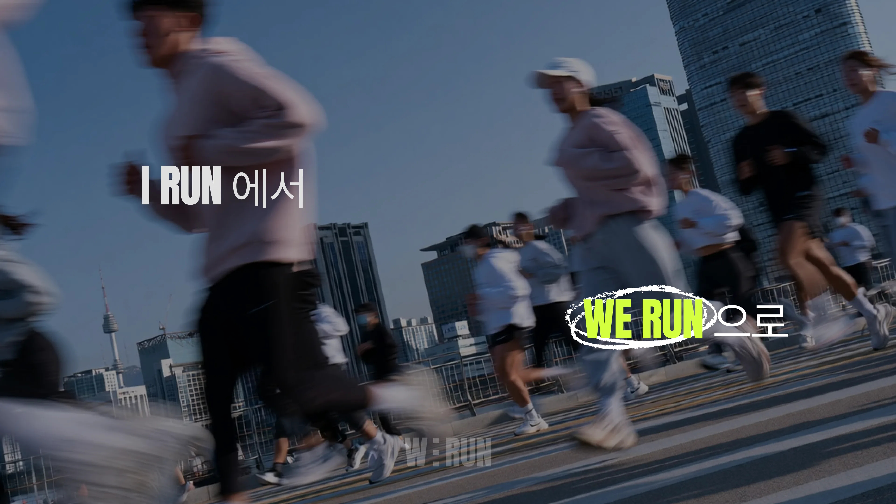

RUNNING APP WE RUN

A fandom app for runners.
혼자 뛰는 러너들을 하나의 팬덤으로 묶는 앱입니다. 대회 추천, GPS로 그림을 그리는 코스, 함께 뛸 크루 찾기까지 '같이 달리는 경험'을 중심에 두고 화면을 설계했습니다.
저는 앱 컨셉 정의와 전체 UI 디자인, 형광 라임을 중심으로 한 브랜드 톤을 맡았고, AI 어시스턴트를 활용해 디자인을 실제 화면까지 옮기며 팀 협업 관리도 함께 이끌었습니다.
Challenge
& Solution
Designing past the mockup, into a working product.
러닝 앱은 챗봇, 지도, 음악, 순위 추천처럼 화면 밖의 기능과 맞물려야 비로소 경험이 완성됩니다. 시안에서 멈추면 '같이 달리는 느낌'이 실제로 전달되는지 확인할 수 없다고 판단했습니다.
익숙하지 않은 영역은 AI 어시스턴트를 활용해 풀어 갔습니다. 무엇부터 확인해야 하는지 질문을 잘게 나눠 리서치하고, 디자인 의도가 실제 동작에서도 유지되는지 하나씩 확인하며 대화형 러닝 코치 화면까지 완성했습니다. 실제 서비스처럼 안전하게 운영되는 조건도 놓치지 않았습니다.
3주 일정 중 2주 만에 핵심 흐름을 완성했고, 남은 1주는 인터랙션과 화면 디테일을 다듬는 데 썼습니다.

What
I Learned
AI moved faster once I knew what to ask.
GOI에서 혼자 끝까지 만드는 법을, ILKW에서 팀이 같은 기준으로 움직이는 법을 배웠고, W:RUN은 그 두 경험이 합쳐진 프로젝트입니다.
AI를 활용하면서 디자이너가 정한 방향을 훨씬 빠르게 검증하고 형태로 만들 수 있었습니다. 다만 무엇을 만들지, 어디까지가 좋은 경험인지 정하는 것은 여전히 디자이너의 몫이라는 걸 이 프로젝트에서 확인했습니다.